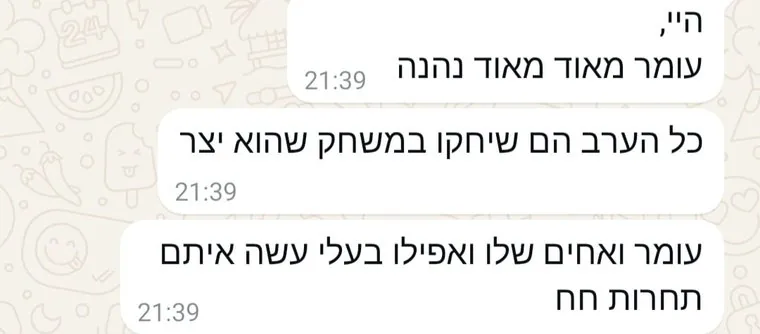
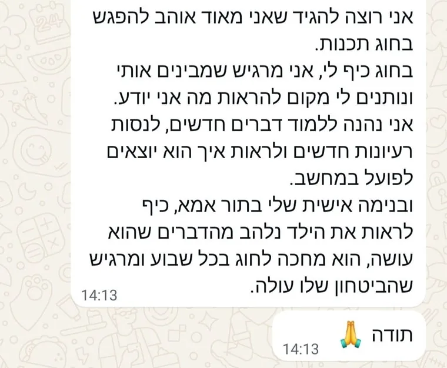
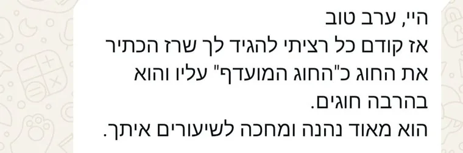
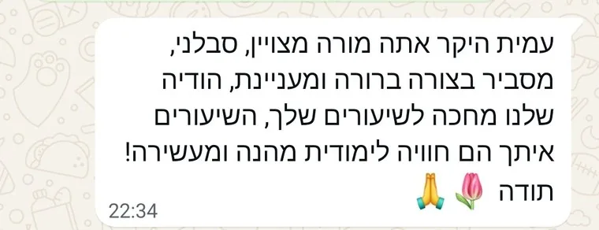
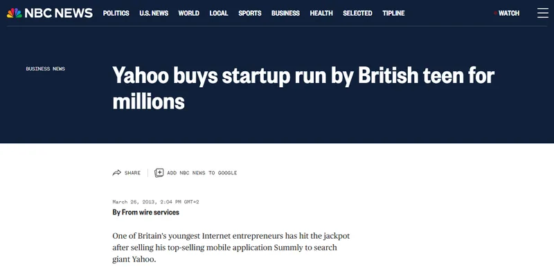
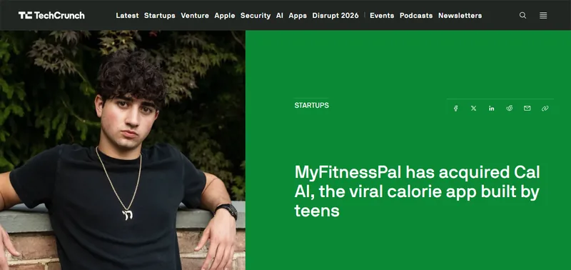
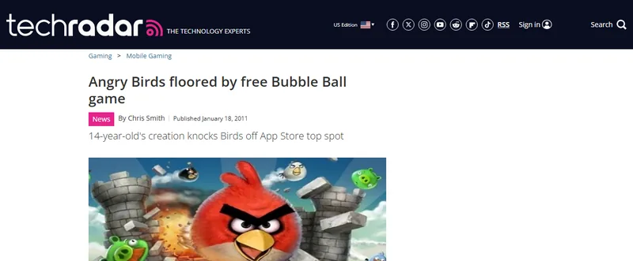
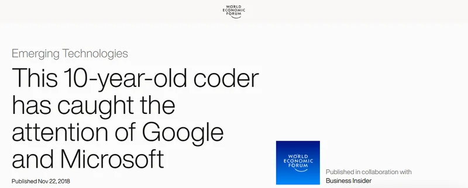
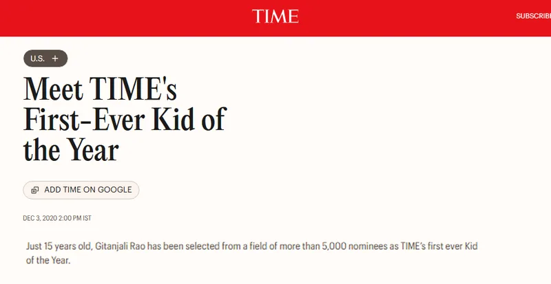
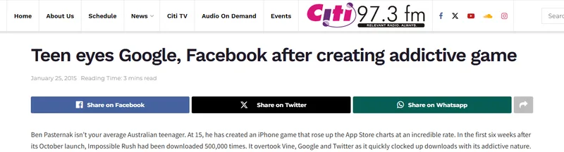

משדר לייב חינמי להוריםיום שלישי 10.1118:30בזום
הדרכה חינמית חושפת: איך ילדים בני 11–16 יכולים ללמוד לבנות אפליקציות אמיתיות בעזרת AI, גם בלי לדעת לתכנת!
הצטרפו למשדר לייב חינמי וגלו איך כלי AI מתקדמים מאפשרים לילדים להפוך רעיון לאפליקציה, ואת 3 הצעדים שיעזרו גם לילד שלכם להתחיל.
להורים לילדים בני 11–16 · מעביר: עמית אוחנה, מייסד INNOKIDS
כן! שמרו לי מקום בהדרכה החינמיתשידור ישיר
שידור ישיראיך ילדים בונים אפליקציות עם AI?
עמית אוחנה · מייסד INNOKIDS · מעל 500 תלמידים
- 93% מבני הנוער בישראל כבר משתמשים בכלי AI
- רק 37% מההורים יודעים שהילד שלהם משתמש
- רק 25% מהמורים מקבלים הכשרה ב-AI
- 71% מהמנהלים יעדיפו מועמד עם מיומנויות AI
- הגיל הממוצע של מייסדי חברות AI ששוות מיליארד דולר ירד ל-29
גלו איך גם הילד שלכם יכול ללמוד לבנות אפליקציות עם AI. שריינו מקום בהדרכה החינמית 👇
יוםיום שלישי
תאריך10.11.2026
שעה18:30
אורךכשעה
איפהבזום!
3 הדברים שכל הורה לילד בן 11–16 חייב לדעת על מהפכת ה-AI וההזדמנות החדשה שנפתחה לילדים
סדר השידור
-
פינה 1
הפער החדש: למה לדעת להשתמש ב-ChatGPT כבר לא מספיק?
מה הילד שלכם כבר עושה עם AI (גם אם הוא לא סיפר לכם), ולמה דווקא זה עלול להשאיר אותו מאחור.
-
פינה 2
איך ילדים בני 11–16 כבר יכולים לבנות אפליקציות בעזרת AI, בלי להתחיל מלימודי תכנות ארוכים?
מה ילדים כבר בונים היום, ולמה עדיף לרתום את המסך במקום להילחם בו.
-
פינה 3
מ"יש לי רעיון" ל"תראו מה בניתי!": 3 הצעדים לבניית אפליקציה בעזרת AI
- לבנות
- ליצור
- להציג
3 הצעדים של הסטארטאפיסט הצעיר, גם בלי ידע קודם בתכנות.
-
בסוף
שאלות ותשובות בלייב: תשאלו אותי כל מה שתרצו על הילד שלכם ועל AI.
אם הילד שלכם בן 11–16, אוהב מחשבים ומסכים, ואתם רוצים שהוא יעשה עם זה משהו גדול יותר, ההדרכה הזאת בשבילכם!
- הורים לילדים שמבלים שעות מול המסך, ורוצים להפוך את הזמן הזה למשהו משמעותי.
- הורים ששומעים על AI ומרגישים שהעולם מתקדם מהר מדי.
- הורים שנמאס להם מהוויכוחים על זמן מסך ומהצפייה הפסיבית בתוכן.
- ובמיוחד הורים שרוצים שהילד שלהם ילמד ליצור ולבנות בעזרת AI, ולא רק להשתמש בו.
והחלק הכי טוב? אתם לא צריכים להבין בתכנות או ב-AI כדי לגלות איך לעזור לילד שלכם להתחיל.
זה בדיוק מה שחיפשתי לילד שלי! שמרו לי מקוםאחרי שליוויתי מעל 500 ילדים בעולם התכנות, גיליתי משהו שכל הורה חייב לדעת על היכולות של הילד שלו
- 4 שנות ניסיון
- 500+ תלמידים
- 10+ מוסדות
- בוגר מדעי המחשב
היי! אני עמית, ואני כאן כדי לעזור לכם להכין את הילד שלכם לעולם של AI.
כבר 4 שנים אני מלמד ילדים ובני נוער לבנות דברים משלהם עם טכנולוגיה. INNOKIDS מאושרת על ידי משרד החינוך, ועובדת עם יותר מ-10 מוסדות, ביניהם עיריית תל אביב-יפו, עיריית ראשון לציון ומכללת HIT.
וזה מצחיק, כי בבית הספר אף אחד לא היה מסמן אותי כ"ילד של מחשבים". גם אני לא הייתי תלמיד מצטיין. רק אחרי הצבא גיליתי שאני אוהב טכנולוגיה, מבין אותה, וטוב בה באמת.
אחרי מעל 500 ילדים, גם בכמה מבתי הספר הטובים בארץ, אני רואה שוב ושוב את אותו דבר: הילדים מוכשרים הרבה יותר ממה שבית הספר נותן להם להראות.
זה לא תוכן לילדים מחוננים. כל ילד וכל ילדה יכולים ללמוד לבנות עם טכנולוגיה. והיום, עם AI, הם יכולים להגיע רחוק יותר מאי פעם.
השיטה שפיתחתי כדי לעזור לילדים לעבור מ"יש לי רעיון" ל"תראו מה בניתי!"
3 הצעדים של הסטארטאפיסט הצעיר
- לבנות
- ליצור
- להציג
לקחתי את כל מה שלמדתי ב-4 שנים, ובניתי דרך שבה ילד בן 11–16 לוקח רעיון משלו, בונה אותו עם AI, ומציג אותו בגאווה. בלי ידע קודם, ובלי שאתם צריכים לדעת לתכנת.
המשדר הקרוב נבנה במיוחד כדי שתבינו מה קורה עכשיו בעולם של הילדים שלכם, ומה אתם יכולים לעשות עם זה. אני מחויב לתת לכם ערך אמיתי, ולחשוף בפניכם את 3 הצעדים שמאפשרים לילד שלכם להתחיל לבנות כבר עכשיו.
שריינו מקום במשדר הקרוב,
ונתראה על המסך,
עמית אוחנה
מעל 500 ילדים כבר למדו איתנו תכנות ויצירה טכנולוגית. הנה מה שההורים שלהם מספרים
כשהילד חוזר הביתה ולא מפסיק לדבר על מה שהוא בנה...
הודעות אמיתיות מהורים, מתוך חוגי התכנות של INNOKIDS.
-

"כל הערב הם שיחקו במשחק שהוא יצר. עומר ואחים שלו ואפילו בעלי עשה איתם תחרות חח"
-

"כיף לראות את הילד נלהב מהדברים שהוא עושה, הוא מחכה לחוג בכל שבוע ומרגיש שהביטחון שלו עולה"
-

"רז הכתיר את החוג כ'חוג המועדף' עליו, והוא בהרבה חוגים"
-

"עמית היקר, אתה מורה מצויין, סבלני, מסביר בצורה ברורה ומעניינת"
הם לא חיכו לסיים תיכון כדי לבנות משהו מדהים. תראו מה הילדים האלה הצליחו ליצור
-

ניק ד'אלויסיו, לונדון: בגיל 15 בנה אפליקציה שמסכמת כתבות. בגיל 17 Yahoo קנתה אותה (דווח על כ-30 מיליון דולר).
מקור: NBC News, 2013
-

זאק ידגרי, ניו יורק: בגיל 17 בנה עם חברים אפליקציית AI שמחשבת קלוריות מתמונה. 15 מיליון הורדות, והיא נמכרה ל-MyFitnessPal.
מקור: TechCrunch, 2026
-

רוברט ניי, יוטה: בגיל 14 כתב לבד משחק לאייפון, שעקף את Angry Birds במקום הראשון באפסטור (במשחקים החינמיים).
מקור: TechRadar, 2011
-

סמיירה מהטה, קליפורניה: בכיתה ב' פיתחה משחק שמלמד ילדים לתכנת, והוא הגיע ליותר מ-100 בתי ספר.
מקור: הפורום הכלכלי העולמי, 2018
-

גיטנג'לי ראו, קולורדו: בגיל 15 נבחרה ל"ילדת השנה" הראשונה של TIME, בין היתר על תוסף AI שמזהה בריונות ברשת.
מקור: TIME, 2020
-

בן פסטרנק, סידני: בגיל 15, משועמם בבית הספר, בנה עם חבר משחק לאייפון. תוך 6 שבועות: חצי מיליון הורדות.
מקור: Citi FM, 2015
הסיפורים האלה יוצאי דופן, והם לא מבטיחים שכל ילד יהפוך ליזם מצליח. אבל הם מראים דבר אחד ברור: היום לא צריך לחכות לגיל מבוגר כדי להתחיל לבנות.
הגופים והמוסדות שבחרו לעבוד עם INNOKIDS
- משרד החינוךמאושרים על ידי משרד החינוך
- עיריית תל אביב-יפו
- עיריית ראשון לציון
- מכללת HIT
הילד שלכם כבר משתמש בטכנולוגיה של העתיד. הגיע הזמן לגלות איך הוא יכול להתחיל ליצור אותה בעצמו!
הצטרפו למשדר החינמי וגלו את 3 הצעדים שיעזרו לילד שלכם להתחיל לבנות אפליקציות בעזרת AI, גם בלי ניסיון קודם בתכנות.
יוםיום שלישי
תאריך10.11.2026
שעה18:30
אורךכשעה
איפהבזום!